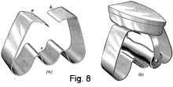
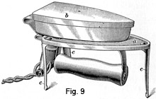
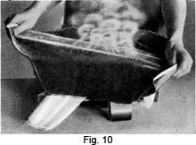

1931 - Laundering and Dry Cleaning
Woman's Institute of Domestic Arts & Sciences,
by Mary Brooks Picken
Steaming
EQUIPMENT FOR STEAMING
75. Steam will be found to be a good friend to any one who wishes to clean and freshen old material, or to remove wrinkles from garments. It is extensively used also to restore ostrich feathers.
Steam used for renovating purposes is known as dry steam; that is, it is made by using considerable heat and very little moisture.
76. Iron Holders for Steaming.—Special small steamers are manufactured, but it is not always possible to obtain a steamer just when it is most needed. Consequently, it is sometimes necessary to construct a home-made affair to do this work.
Place two bricks on the table, side by side and 1 1/2 inches apart. Heat an iron on the stove, place it bottom side up on the two bricks with the handle down in the space between them. This, however, is a rather makeshift arrangement and, as it is none too firm, would not prove satisfactory for any one expecting to do a great deal of steaming.
77. If desired, a special holder for the iron may be purchased at small cost. One form of holder is illustrated in Fig. 8 (a). This consists of a strip of sheet steel about 2 inches wide bent into the form shown. The iron is inverted and placed so as to rest on the parts a and b, its handle extending down into the groove c. An iron in place on the holder is shown in (b).
78. Another form of holder of somewhat better construction and intended for use with an electric iron, is shown in Fig. 9. The flat top a has the shape of the iron b, and a slot is cut in the center of it to allow the handle of the iron to be slipped in. It is supported on three legs c that are riveted to the top a.
79. Teakettle.—To furnish the thin, dry kind of steam, any ordinary teakettle is satisfactory. There are steam spreaders to be attached to the spout, which are a great help. Good results, however, can be secured without them.
STEAMING PROCESSES
80. Steaming Garments.—For a simple method, place a very damp cloth of single thickness on the garment. Then run the iron above the wet cloth and the garment, holding it very close to the wet cloth but not placing any weight on the iron.
The process of steaming is reversed when a small article, a small section of a large article or garment, or a piece of material is to be steamed. Place a damp cloth, folded into several thicknesses, directly on the hot iron and place a dry cloth over it. Then, as shown in Fig. 10, draw the material lightly over this so that the steam penetrates it. To assist in the steaming process, brush the material lightly if it is a woolen material without nap or with a nap that will not be injured by the brushing.
It is an advantage if there are two persons to do this work. One may hold the material while the other brushes it with light, short strokes. Brush against the nap to raise the pile of the fabric. As a last step, remove the wet cloth and hold the material for a moment or two over the dry heat to absorb the moisture.
81. A method that works on the same principle as the precedeing one, but uses a teakettle instead of a hot iron to create steam, is the following one:
Place a teakettle on the stove and cover the bottom of the kettle with water to the depth of about 1 inch. As soon as the steam emerges from the spout, shake the garment in the cloud of steam for a few seconds, or until the garment becomes damp enough to lose its wrinkles but not its shape. In the case of pile fabrics, brushing, as described in Art. 80, gives added results, but care must be taken not to brush vigorously nor while the fabric contains much steam.
Steaming according to this method is applicable to small articles or larger ones having wrinkled places, in need of special treatment.
82. The bathroom may sometimes be used to steam garments. Hang the garment in the bathroom by the top, close any windows or doors, and run enough hot water in the tub to fill the room with steam. Let the garment hang until the steam has cooled. Then open two windows, or a window and a door, to allow a free circulation of air, but do not handle the garment until it has thoroughly dried.
83. Lifting the Nap on Pile Fabrics.—When restoring pile fabrics such as velvet, plush, duvetyn, etc., a good plan is to have a soft brush and a small piece of hose that fits into or over the mouth of a teakettle. Have the water boiling all the while, and with the steam coming through the hose, run it over the garment, which may be laid out on a table or hung on a hanger, and as the steam is put over the garment, brush gently but continuously. Using the steaming and brushing processes together in this way is much more effective than using either one separately.
The precaution necessary in the use of this method is to take care not to allow drops of moisture, which are likely to collect on the end of such a hose, to fall onto the garment. To guard against this, a piece of cloth may be tied over the mouth of the hose.
84. Steaming Feathers.—Ostrich feathers, aigrettes, or fancy feathers, which have lost their newness, should be steamed, but care must be taken not to steam them too much or they will lose their curl. Shake the feather in a cloud of steam for a few seconds and it will unfold and become fluffy and light.